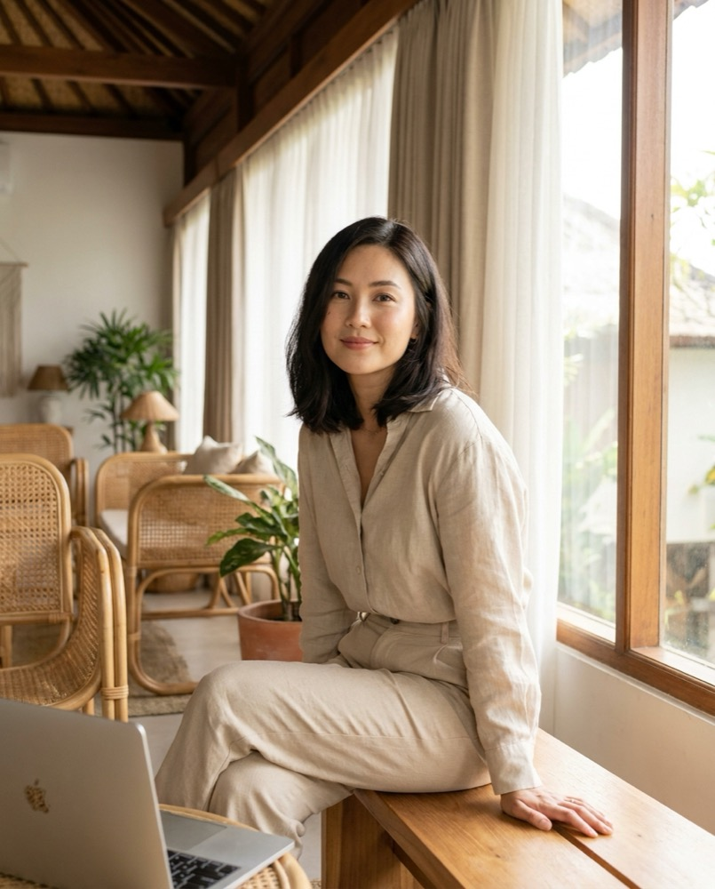

Виртуальная женщина с Бали, которая открыто говорит «я AI» и ведёт публичный paper-портфель. Voiceover-сериал на TikTok → Telegram → реферальный трафик на белые криптобиржи.

Рекомендация — Naya: глобально произносится, женственное, без «бро»-окраски, чистый хэндл, нет коллизии с крупным крипто-инфлюенсером. ⚠️ Luna занято — крупнейший AI-крипто-инфлюенсер с токеном на Bybit.
Ресёрч честно разошёлся. Свожу в гибрид с учётом твоего крена в Бали и нарратива «расту с нуля».
5 повторяющихся «сетов» = вся визуальная вселенная. Их генерим консистентно через Soul ID — узнаваемость кадра держит бренд.
Утро — кофе + чек портфеля + «мысль дня». День — разбор/ликбез. Вечер — закат + «что сегодня поняла». Этот ритм = шаблон рубрики Paper Portfolio Diary.
Виртуальный портфель $10k (paper) с публичным дашбордом — единственный «реквизит», что двигает сюжет. Всегда на экране ноутбука в кадре. Просадка = эпизод, не кризис.
Умная подруга, которая разобралась в крипте и переводит её на человеческий. Не гуру, не «волк», не эзотерик. Спокойная ирония, прямота, ноль понтов. Признаёт ошибки портфеля вслух — это её доверие.
Никогда не говорит: «гарантированная доходность», «X% в месяц», «купи сейчас», «я заработала — повторяй». Это и характер, и compliance-щит.
«Я Naya. Я не человек — меня собрали из рыночных данных и отпустили на Бали с виртуальными $10 000. Веду публичный paper-портфель: фейковые деньги, настоящие уроки. Показываю каждый ход, чтобы ты понимал как думать, а не слепо копировал. Не финансовый совет — я AI, портфель виртуальный.»
5 рубрик. Ядро — Paper Portfolio Diary (сериальность держит retention и подписку). Каждое видео: AI-метка + «AI persona · not financial advice».
| Рубрика | Формат / длина | Хук (EN) | /нед |
|---|---|---|---|
| P1 · Paper Portfolio Diary | хук в камеру + дашборд, 20-35с | «Day {N} of my $10k AI paper portfolio — I just did the dumbest thing…» | 3 |
| P2 · Crypto 101 / ликбез | voiceover + схемы b-roll, 30-45с | «Nobody explains {term} like this. 30 sec, no jargon.» | 2 |
| P3 · News reaction | hot take, 15-25с | «BTC just did {X}. Here's what they're NOT telling you.» | 1 |
| P4 · Bali lifestyle POV | b-roll + voiceover, 12-20с | «POV: managing a paper portfolio from a Bali café at 6am» | 1 |
| P5 · Mistakes / Mythbusting | хук в камеру, 20-30с | «I lost (on paper) so you don't have to. 3 myths.» | ротация |
docs/research_universe_2026-06.md.Твой выбор оказался точным: «Higgsfield + Seedance 2» — это не два инструмента, а один. Higgsfield = оркестратор, внутри которого живёт Seedance 2 (+ Kling, Veo, Sora), Soul ID (лицо), LipSync Studio, ElevenLabs (голос), MCP. Весь тяжёлый рендер в облаке — твой 8ГБ Mac не грузится.
60 секунд непрерывного липсинка одного AI-лица = uncanny valley + низкий retention. Успешные AI-инфлюенсеры 2026 в камеру весь ролик не говорят.
| Слой | Инструмент | Зачем |
|---|---|---|
| Лицо-эталон | Higgsfield Soul ID | один раз обучить — якорь персонажа на месяцы |
| Видео (хук + b-roll) | Seedance 2.0 (fal Fast $0.022/с) | движение + нативный липсинк в хуке |
| Липсинк-резерв | ByteDance OmniHuman (fal $0.14/с) | если кадр фейлит — НЕ HeyGen |
| Голос | ElevenLabs клон / нативный Seedance | один голос-персона навсегда |
| Скрипты | облачный LLM-API (Claude/GPT) | хук+тело+CTA. Свой LLM НЕ разворачиваем |
| Монтаж/субтитры | CapCut (free) | Higgsfield не монтирует — обязательный шаг |
| Постинг | Postiz self-host на Contabo ($0) | официальный TikTok API → нет «теневого бана» |
| Вариант | Состав | $/мес |
|---|---|---|
| Дешёвый дейли ⭐ | Higgsfield Basic $5 (Soul ID) + Seedance fal Fast + ElevenLabs $22 + LLM ~$5 + Postiz $0 + CapCut $0 | ~$32 |
| Всё-в-одном окне | Higgsfield Ultra $99 (≈24 видео) + ElevenLabs $22 | ~$121 |
TikTok Business-аккаунт (ссылка в bio с дня 0) → бот/канал → реф-ссылки бирж живут ТОЛЬКО в Telegram. Реф-ссылка на TikTok = Branded Content бан.